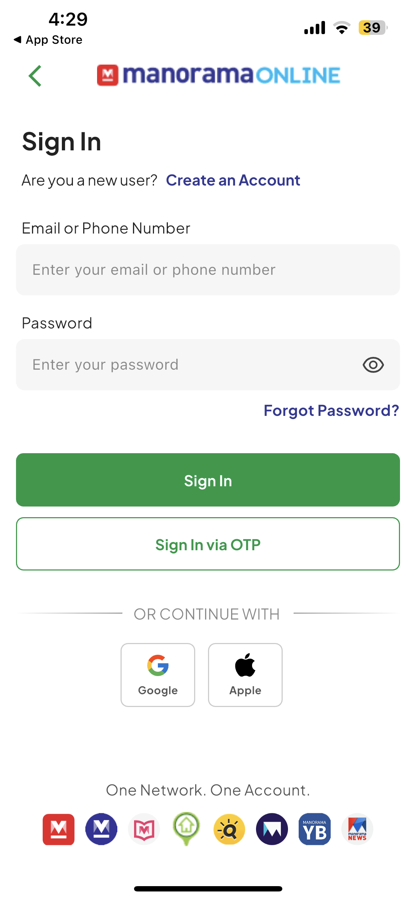
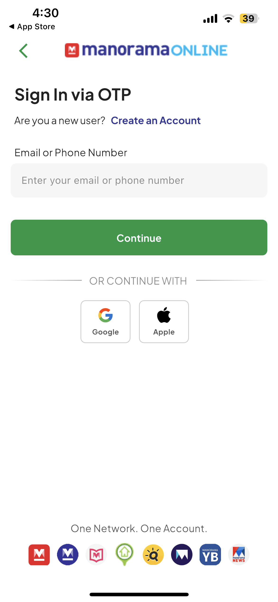
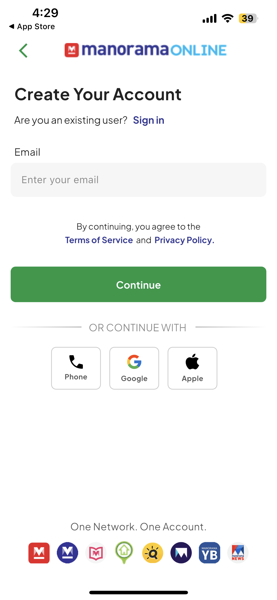
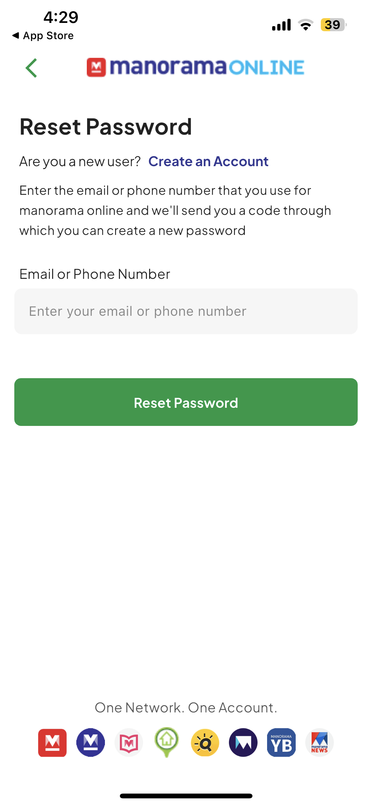

Platform Case Study · Manorama SSO
Building a configurable Flutter SDK for a shared Manorama login ecosystem
Android and iOS already had native SSO SDK mechanisms. I built the Flutter SDK layer so Manorama Flutter apps could use the same authentication system with reusable login screens, client configuration, platform security setup, and documented installation steps.
Why It Exists
One account system needed a Flutter integration path without every app rebuilding auth
The goal was not to build a single app login screen. The goal was to create a reusable Flutter SDK layer that could sit inside different Manorama Flutter applications and follow the same SSO behavior already available through native Android and iOS SDKs.
The SDK reads app/client configuration, initializes storage and device details, applies platform-specific Android/iOS values, and presents the auth flows needed by the consuming app.
Configurable SDK
Admin/client instructions control how the SSO experience behaves for each app
Stage and production setup
The SDK loads a JSON configuration and switches between UAT and production identity endpoints.
Android and iOS app mapping
Configuration supports platform-specific client IDs, bundle/package identity, redirect URLs, scopes, and hashes.
Network logo visibility
The bottom "One Network. One Account." area can show or hide Manorama ecosystem logos per app configuration.
Password, OTP, Google, Apple
The SDK supports multiple sign-in paths and social login options based on platform/app requirements.
SHA/fingerprint and token handling
Android fingerprint/signature details are captured, client tokens are generated, and SHA-256 code challenge flow is used.
Documentation and example app
The package includes an example app and setup path so other Flutter apps can integrate the SDK consistently.
SDK Screens
Reusable screens for the shared Manorama account experience




Engineering Flow
The SDK separates app configuration, platform setup, UI flows, and callbacks
Initialize config
Load the app's SSO JSON, initialize storage, read package/bundle data, and prepare Android/iOS client values.
Present auth flows
Expose login, OTP login, register, forgot password, profile completion, and edit email/mobile/name flows.
Secure requests
Use client hash/token generation, app fingerprint details, device metadata, and code challenge generation.
Return control
Use auth and user callbacks so the consuming Flutter app can continue after login or required-field completion.
Challenges & Resolution
The hard part was making a shared identity system feel simple for every Flutter app team
Challenge
Native SDK behavior had to be brought into Flutter without changing the identity direction.
Resolution
Created a Flutter SDK wrapper around the same client configuration and login behavior used by the native SSO approach.
BenefitFlutter apps could adopt Manorama SSO without rebuilding the login system independently.
Challenge
Different apps needed different branding and login options.
Resolution
Used configuration-driven flags for environment, social options, and Manorama network logo visibility.
BenefitThe same SDK could support different app identities while keeping the core SSO flow consistent.
Challenge
Security setup had to work across platform-specific app identities.
Resolution
Handled package/bundle mapping, fingerprint/signature details, client hashes, token generation, and SHA-256 challenge flow.
BenefitReduced integration mistakes and made the SDK safer to reuse across Flutter apps.
This case study is intentionally separated from app migration work. The SSO SDK is a platform contribution for Manorama's wider Flutter app ecosystem.
Flutter SDKManorama SSOAndroid/iOS bridgeJSON configurationOTPGoogle Sign-InApple Sign-InSHA/fingerprint setupDocumentation
Contact
Ready to discuss senior Flutter, mobile architecture, or product engineering roles
Email: muhmmdshabeer@gmail.com · Phone: +91 95672 00188